Somebody else's card. Their name, their set, their season — and Shaq in the background, uncredited, like an actor wandering through one scene of a film that isn't theirs.
The camera wasn't looking for him. It found him anyway.
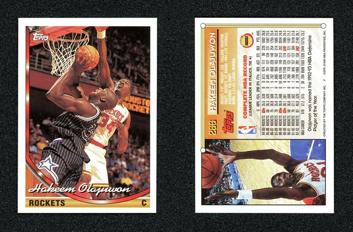
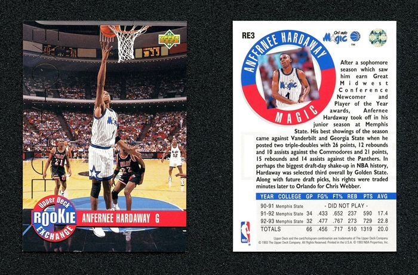
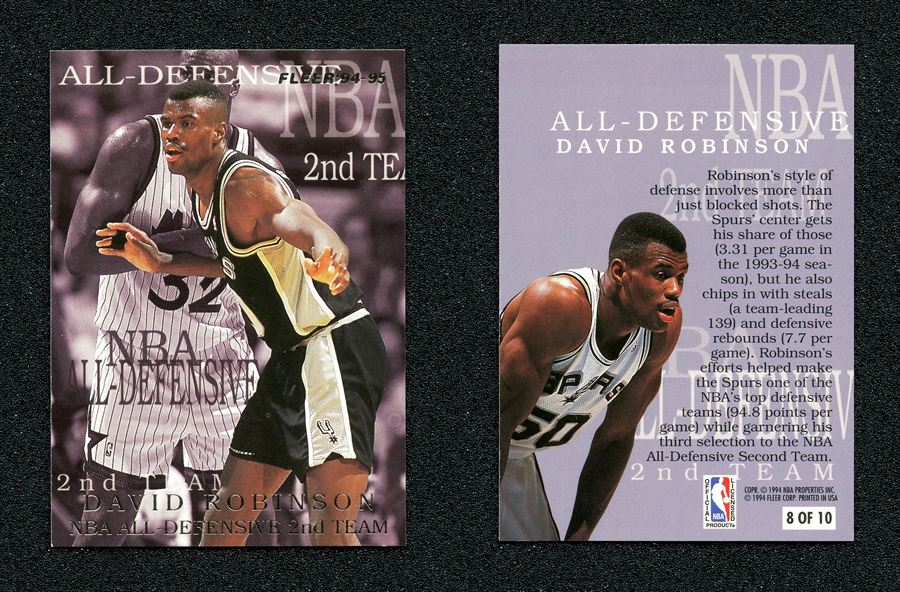
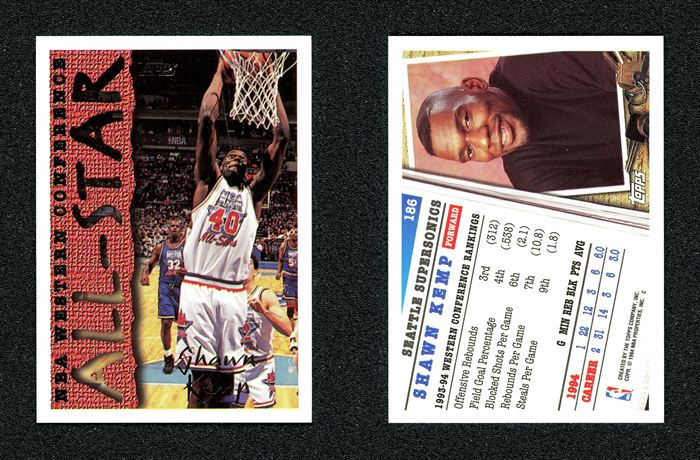
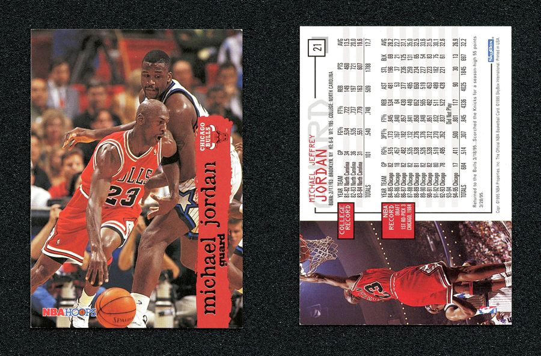
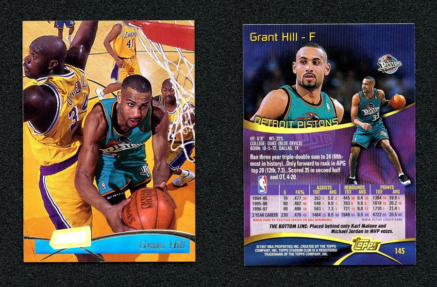
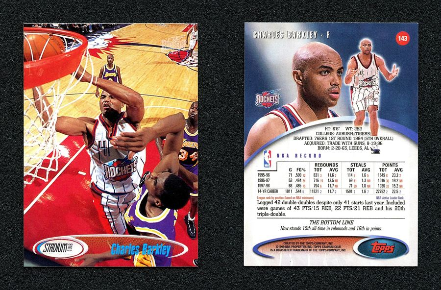
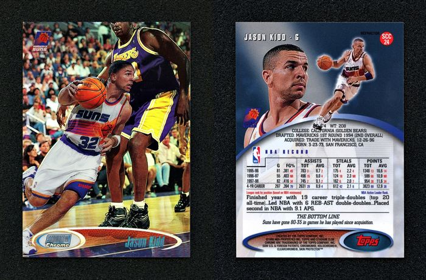
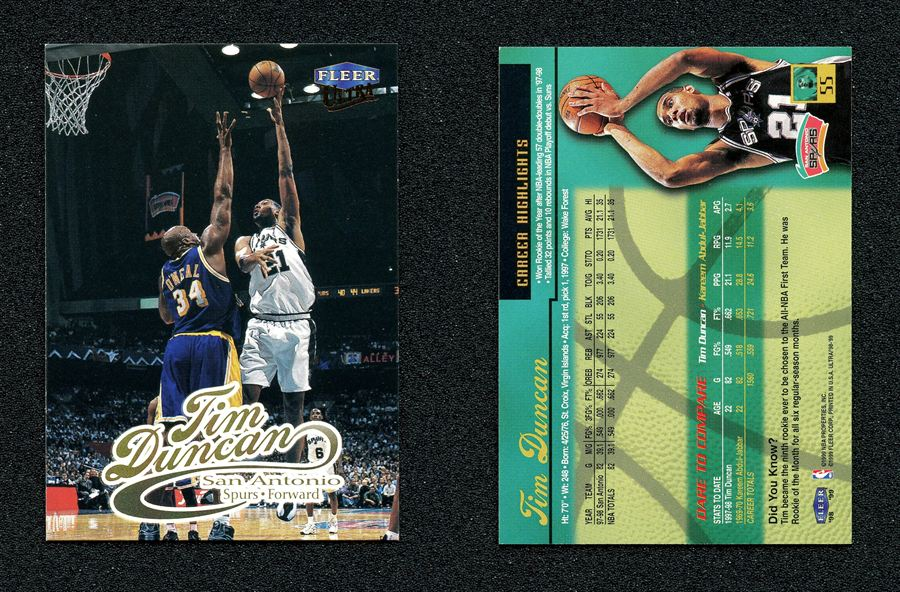
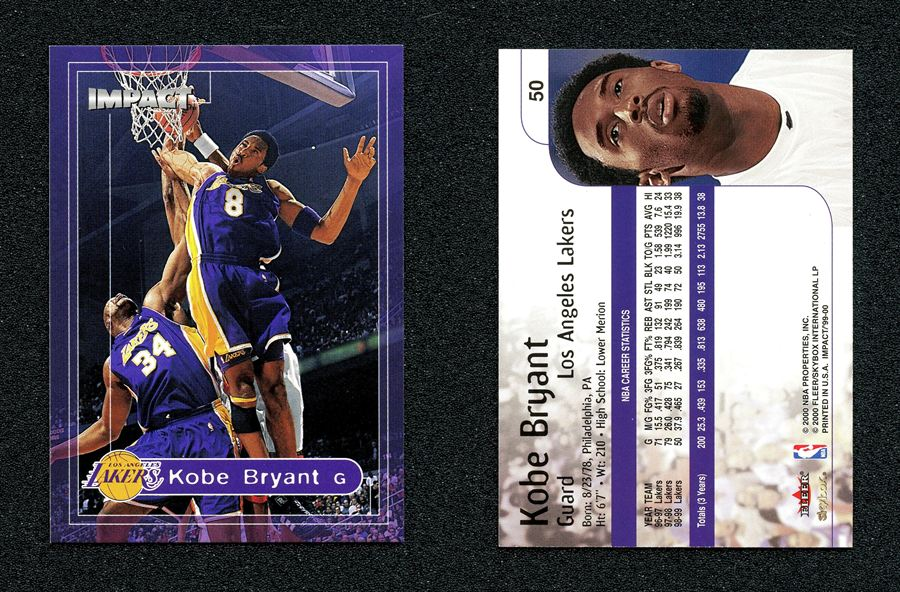
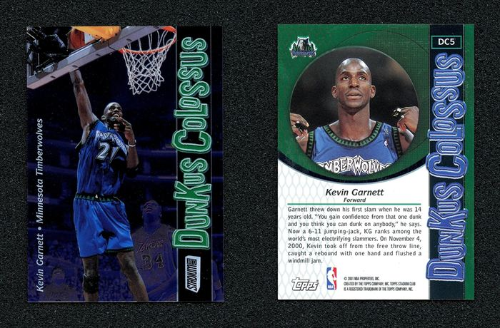
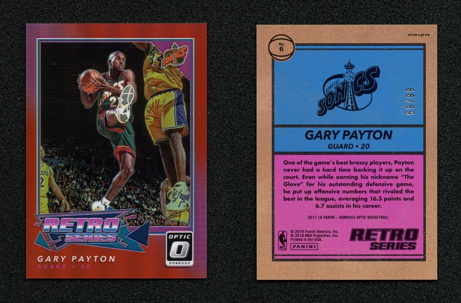
twelve of them, out of 85 already scanned — more going up as they're processed.